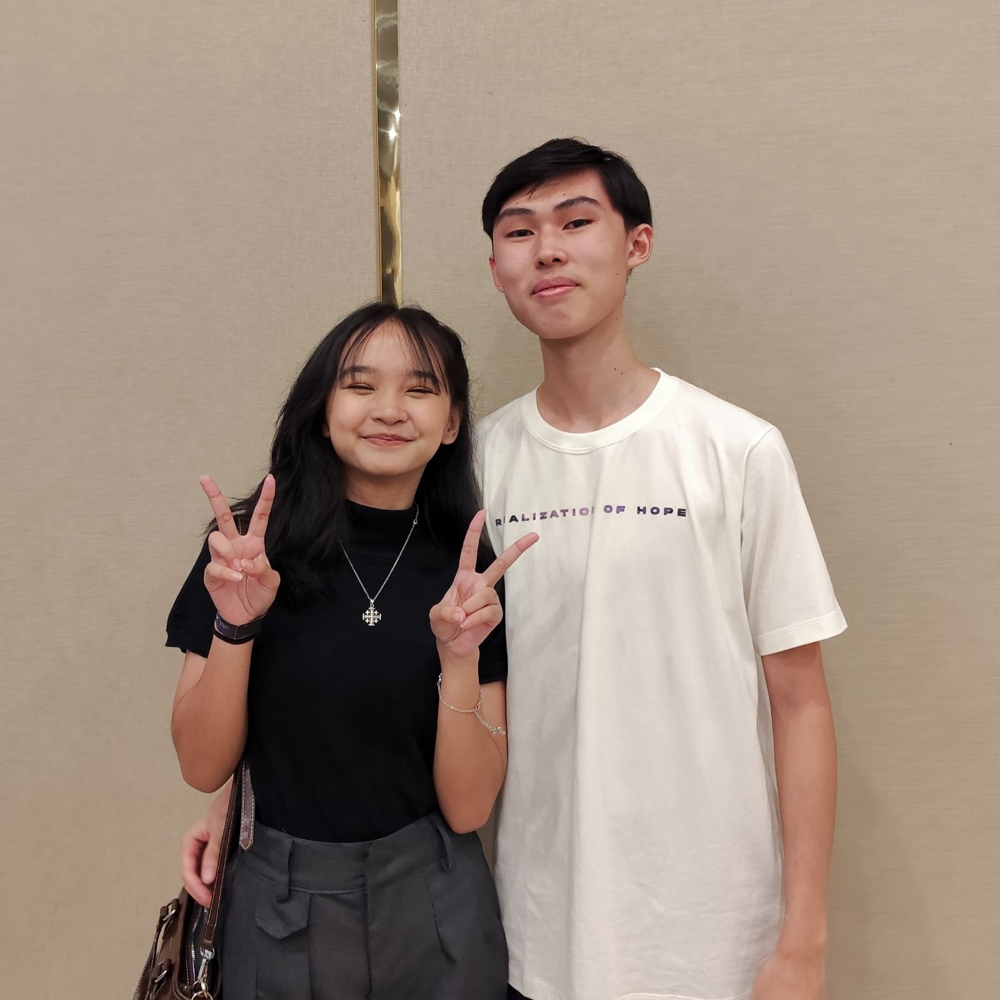

The Event That Made us Friends
...... - Ini event pertama banget yang bikin kita deket sih pas retret juga, banyak momen di era ini pas di OSIS bayar uang kas di event inter ya gitulah, terus yang kejadian ci angel terus kita jadi deket dehhh. abis kejadian ci angel kita jadi sering ngobrol curhat sampe malem, abis itu aku sweet 17 kamu dateng bareng stevey yang kamu pulang duluan wkwkwk, yaaa mulai dari situ kita jadi deket lah ya...

IGNITEEEEE!
19 December 2023 - Anjayyy christmas pertama kitaaaa, ini sangat seru walaupun aku masih baru kenalnya cuma petra ben hezki kamu liony ya gitulah. Ini seru tapi waktu itu lucu yang kita beli makanan itu terus balik balik ada temen kamuhhh.

First Dateee!
21 December 2023 - First date yang sangat gacor, semua karna dorongan lita dll jugasih jadi aku berani ngajak kamu dengan alibi kamu ga dibolehin terus aku chat mamah boleh 😌. Tapi ini seru banget padahal kita tuh baru bet pdkt cuma kek udah lama temenan seru bet pokoknya jalan jalannya, ngobrolnya sampe ke bab di gramed wkwkwk.

040424
4 April 2024 - Hari yang sangat gacorrr ini juga wkwkwk, mulai nonton film dulu abis itu pergi muter muter nyari tempat, terus kita ke foodpedia duduknya di yang atas tuh, tibalah waktunya wkwk 18.34 ngomong terus 18.40 baru dikasih jawaban. Abis itu jadi dehhh yuhuuuu, untung diterima ygy kalo ga diterima ya gataudah.

040425
4 April 2025 - Setelah banyaknya momen momen bahagia sedih dan juga ribut ribut diawal kita sampai di checkpoint pertama yaitu anniv pertama yuhuuuu. Selama setaun pacaran sama kamu walaupun banyak LDRnya cuma sangat seru dan aku bahagia, walaupun kita sempet ribut ribut pas awal awal kek abis retret dll itulah, cuma setelah itu sangat seru aku banyak berubah menjadi lebih baik juga karena kamu. Aku sangat bersyukur bisa sama kamu selama satu tahun itu, aku juga jadi banyak belajar tentang banyak hal tentang kamu dan menajadi pribadi yang lebih baik.
040426
4 April 2026 - Yuhuuu, selamat buat kita telah menacapai checkpoint kedua yaitu anniversary kedua kitaaa. Bingung mau bilang apa karena udah dibilang di anniversary pertama. Cumaaa gapapah, makasih yah udah tetep sama aku sampe saat ini dengan segala kekurangan aku, terus ada cowo cowo yang demen ma elu cuma semoga kamu terus milih aku yah, ya aku juga harus yakinin kamu terus juga sihhh. Ga boong di anniv kedua ini rasanya banyak hal yang sangat mengerikan kek yang udah kita obrolin juga jadi gausah tak tulis lagi, jujur sebenernya takut dari awal pembahasan soal itu karena ya kamu tau sendiri lah aku dah kek kepelet kecintaan ini. Aku cuma berharap kita bisa lewatin semua ujian yang kita hadapin nantinya, ya semoga Tuhan juga berkehendak biar kita berjodoh sampe nikah, kalo dah nikah kan kita bener bener menjadi 1 kalo di alkitab wkwkwk. Oiya maaf yah kalo aku ini banyak salah sama kamu, bikin kamu nangis, marah, ngambek, dan semuanya itulah. Maaf juga yah kita gabisa ketemu di anniv kedua ini dan kamu gabisa dapet hadiah langsung di hari ini. Sekali lagi makasih yah atas selama ini membuat aku bertumbuh, belajar banyak hal, bikin aku bahagia, bikin aku ngerasa punya rumah untuk pulang untuk cerita cerita, udah jadi my safe place, dan masih banyak hal yang gabisa aku sebutin 1 1 juga karna banyakkk. I just hope you're my forever, and i will do my best to make you happy, to be the best for you, and to love you with all my heart. I can't wait to see what the future holds for us. After all this time, I Always love you. I love you 3000 Evelyne, Happy anniversary.





"You are altogether beautiful, my love; there is no flaw in you"
- Songs of Solomon 4:7